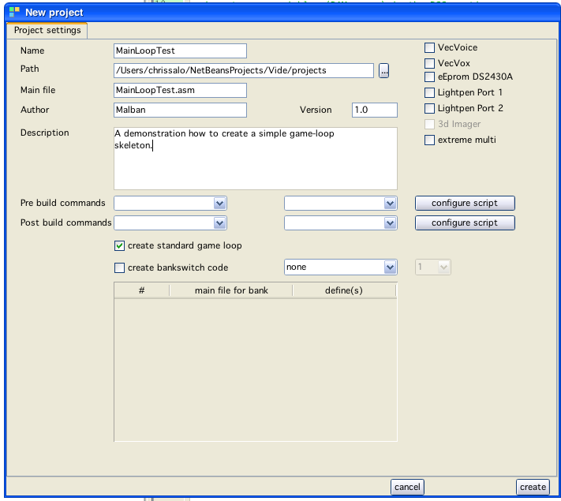

Game loop created window
When creating a new project (or create a new file of type "vectrex") one is given the choice to create a standard vectrex game loop.
The project window looks like:

new project window
If you select (like in the window shown) the checkbox "create standard game loop", that said game loop file will be created (in the example, a file called "MainLoopTest.asm").
Also the standard vectrex include file: "VECTREX.I" will be copied to the new project directory. The whole scenario than looks like:
Game loop created window
The game loop is a section of the vectrex program that is (more or less) repeated throughout the complete lifecycle of the game.
It often starts with a recalibration routine (ensuring a stable, flicker free display). Other parts of the game loop handle:
player input
sound generation and output
caclulations (e.g. colision detection)
display
The order of these can change - but most of the time at least the above are present. In a clean (not to optimized) program the game loop can most of the time be easily recognized by the recalibration, a couple of instructions mainly consisting of calling subroutines and jumping back to the start of the loop.
In more sophisticated programs main loops might not so easily be recognized.
The game loop created by vide is fairly simple and easily recognizable. The loop is contained in the section between:
main:
...
...
BRA main
Further enhancements of the main loop should be inserted there (for starters preferable in calling subroutines which handle the tasks you think of).
The created game loop by vide can be run out of the box, but it does not represent more than a little "hello world" program:

Hello world window